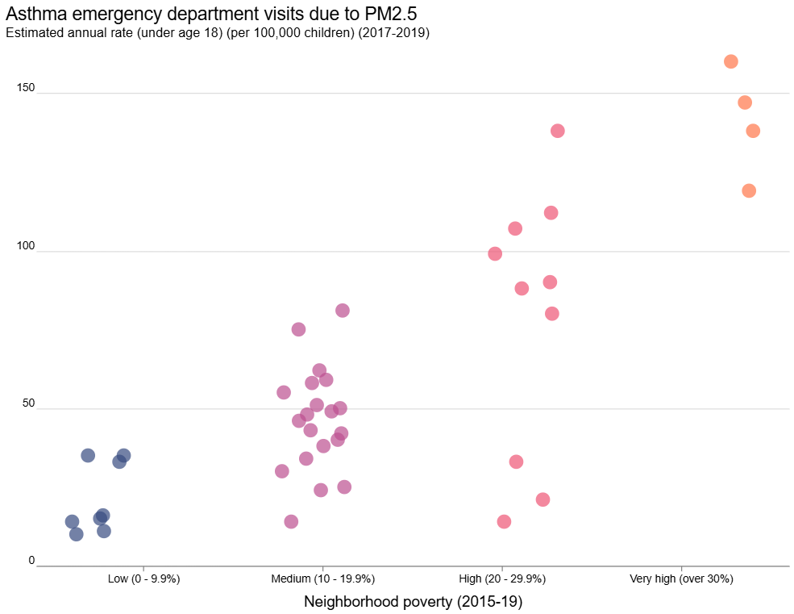

Concerning respiratory diseases, exposure to PM has been shown to cause several diseases and health effects:
- Pulmonary fibrosis:
- Increase in M1 and M2 macrophages:
- Cardiovascular effects:
- Other diseases:
- Pulmonary fibrosis is a lung disease that causes the lungs to become scarred and stiff, thus making it difficult to breathe.
- Both of which are white blood cells that fight microorganisms and remove dead cells in the body. The increased count of M2 macrophages can cause both pulmonary fibrosis and lung cancer.
- PM2.5 is linked to a higher risk of heart attack, hypertension, and stroke, atherosclerosis (plaque buildup in arteries), and lead to other heart problems, including arrhythmias (abnormal heart rhythms).
- PM2.5 is also related to endocrine diseases, obesity and diabetes, and neurological diseases. As one can tell, there are a myriad of health issues that air pollution can cause.

Copyright © 2022 Pryor, Cowley and Simonds.

New York City Department of Health, Environment & Health Data Portal.